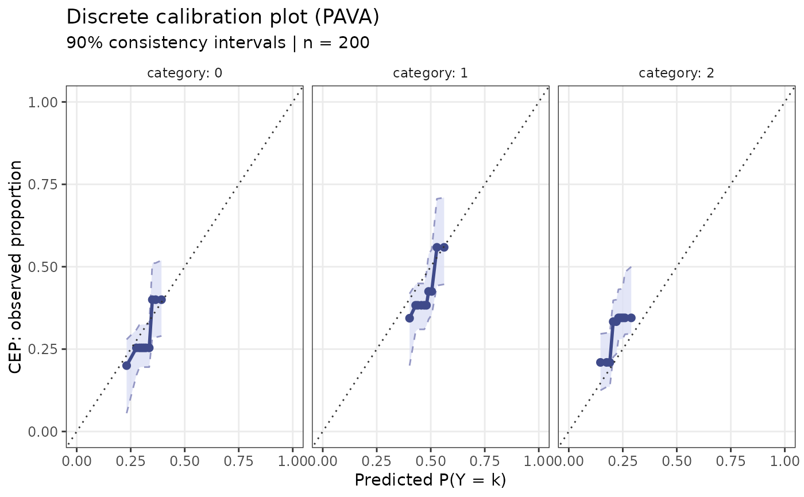

PAVA Calibration Plot for Discrete / Multinomial Outcomes
ppc_calibration_discrete.RdExtends the binary calibration plot to discrete or ordinal outcomes
(Section 5 of Sailynoja et al. 2025). For each unique category k in y,
it plots predicted P(Y = k) vs. the isotonic-regression CEP for that
category, with consistency intervals.
Arguments
- y
Integer or logical vector of observed binary outcomes (0/1 or FALSE/TRUE). Length
n.- yrep
Numeric matrix of posterior predictive draws. Rows = draws, columns = observations. Dimensions:
S x nwhereSis the number of posterior draws.- n_quantiles
Integer. Number of quantile bins for grouping predicted probabilities before applying isotonic regression (default 10). More bins give finer resolution but noisier estimates.
- prob
Nominal coverage probability for the consistency intervals (default 0.9).
- n_boot
Integer. Number of bootstrap resamples for the consistency intervals (default 500).
- ...
Currently unused; reserved for future arguments.
References
Sailynoja, T., Johnson, A., Martin, R., & Vehtari, A. (2025). Recommendations for visual predictive checks in Bayesian workflow. arXiv:2503.01509.
Examples
set.seed(42)
n <- 200
# Ordinal 0/1/2 outcome
true_logit <- rnorm(n)
y <- ifelse(true_logit < -0.5, 0L, ifelse(true_logit < 0.5, 1L, 2L))
# Simulate yrep from a noisy version of the true probabilities
yrep <- do.call(rbind, lapply(seq_len(100), function(i) {
ifelse(rnorm(n) < -0.5, 0L, ifelse(rnorm(n) < 0.5, 1L, 2L))
}))
ppc_calibration_discrete(y, yrep)
